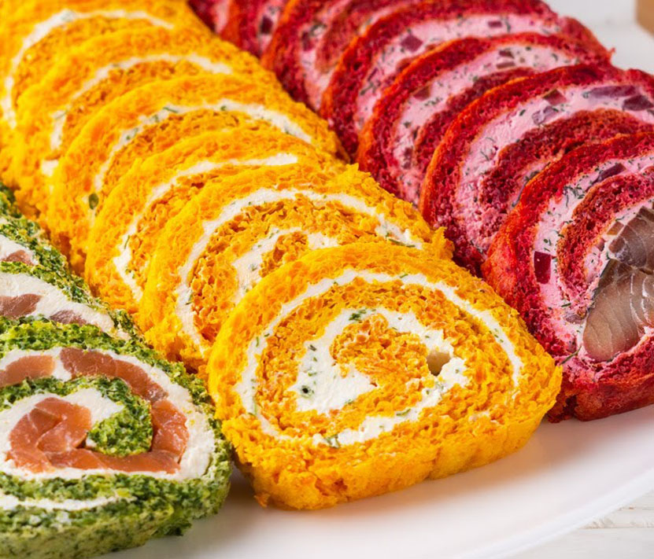

Представляем вам рецепт вкуснейшего салата-торта из крекеров. Готовится он просто и быстро. А продукты используются самые доступные.

Новогодние салаты и закуски ))
Позвоните нам, и мы организуем
праздничный стол по высшему разряду!
Жми!

Позвоните нам, и мы организуем
праздничный стол по высшему разряду!
Жми!
Необходимые продукты:
круглый крекер – 0,2 кг
вареное яйцо – 3 шт
твердый сыр – 0,1 кг
рыбные консервы в масле – 0,5 баночки
майонез – 250 гр
лук – 0,5 шт
чеснок – 2 зубчика
соль, перец
Представляем вам рецепт вкуснейшего салата-торта из крекеров. Готовится он просто и быстро. А продукты используются самые доступные.
Необходимые продукты:
Молочная колбаса - 300 г
Картофель - 2 шт
Морковь - 1 шт
Яйцо куриное - 5 шт
Соленый огурец - 3 шт
Зеленый горошек - 100 г
Майонез - 3-4 ст.л
Маслины консервированные - 3 шт
Зерна граната - 2 шт
Твердый сыр - по вкусу
Хотите совет?
Подключите к украшению блюда младшее поколение, ведь процесс очень увлекательный!
Необходимые продукты:
Семга слабосоленая - 200 г
Шпинат - 150 г
Мука - 50 г
Сыр сливочный - 200 г
Яйца - 3 шт
Лимонный сок - 1 ст.л.
Соль - по вкусу
Перец черный молотый - по вкусу
Варианты оформления

Необходимые продукты:
Помидоры чери
Маслины
Огурец свежий
Сыр фета или брынза